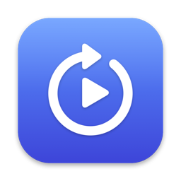

Skip around Quick Look videos with the arrow keys.
Free and open source · macOS 13 Ventura or later · Apple silicon & Intel
Try it — press ← → on your keyboard, or click the keys.
Jump back or forward 5 seconds, or 30 with Shift. Both step sizes are adjustable from the menu bar.
Keys are caught only while a Quick Look window with a video or audio timeline is open. Everywhere else, arrows behave as usual.
No Dock icon, no windows. Toggle it off, change step sizes, or launch it at login from one small menu.
| Keys | Action |
|---|---|
| ← → | Seek back / forward (5s by default) |
| ⇧← ⇧→ | Seek back / forward (30s by default) |
Combinations with ⌘ ⌥ ⌃ are never touched.
Quick Look's player exposes its timeline as an accessibility slider whose value is the playback position in seconds. When you press an arrow key, QuickLook Seek checks whether the frontmost app has a Quick Look window with that slider, and if so, moves it. If not, the key passes through untouched.
Nothing leaves your Mac. The app doesn't collect analytics. The only network request it makes is checking GitHub for updates.